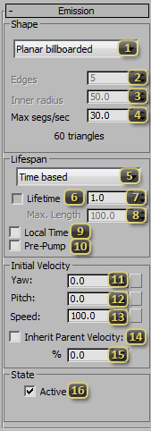
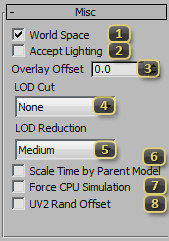
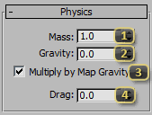
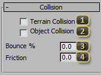

Node: Effect: Ribbon
The SC2Ribbon Node, found in the Particle Systems create panel, generates a special kind of particle system, that instead of drawing individual particles, draw a single strip of polygons connecting each simulating point. In StarCraft II, these are used things like the Zealot's pony tail, and trails for projectiles like on the Marauder's shells.
Emission
The Emission rollout defines properties for the overall look of the ribbon. This includes the smoothness, shape, length, and direction the ribbon will take on. These values define the creation of each segment of the ribbon. They can often be animated to control the overall shape of the ribbon.
Shape defines the geometry of the Ribbon.
- Planar billboarded always faces the camera.
- Planar is based on the initial orientation of the ribbon.
- Cylinder is a prism down the ribbon.
- Star allows for indents in the cylinder.
Edges declares how many sides a cylinder should have, or how many points for a star.
Inner Radius sets, as a percentage, how deep the indents are for a star-shaped ribbon. 100% is the degenerate case, yielding a cylinder. 0% means the inner points of the star collapse to the center of the ribbon.
Max segs/sec is the emission rate for the ribbon and has a direct impact on the performance characteristics of the ribbon. Higher numbers will make the ribbon smoother, but more expensive to simulate and draw. The estimated polygon count is generated below, though the actual count may be inaccurate for a Length based ribbon.
Lifespan defines how the segments of the ribbon are culled.
- Time Based means that a segment of the ribbon will be emitted, and last until it has been alive the number of game seconds defined in the Lifetime field.
- Length Based end segments will be culled when the ribbon is greater than the Max. Length. This is useful for ribbons of fixed length, such as for tails, capes, and tendrils.
Lifetime (checkbox) allows a lifetime to be specified for the Length based ribbon. This allows for a secondary culling mechanism, to prevent the segment count of a ribbon from getting out of hand in the worst case.
Lifetime (field) is the maximum number of in-game seconds that a segment of the ribbon will live for.
Max. Length is the total distance along a Length based ribbon before segments will be culled.
Local Time toggles the ribbon between simulating in real time or synced with the animation. If the ribbon should simulate in "real-time" no matter what, this checkbox should remain unchecked. Check it if the ribbon should adjust to match the animation speed.
Pre-pump simulates the ribbon prior to its first appearance on screen, making it appear at full length, rather than "growing" the first time it appears.
Yaw leans emission of the ribbon along its local X-axis. ( The button to the right may be used to add procedural overlay noise to this field. )
Pitch leans emission of the ribbon along its local Y-axis. ( The button to the right may be used to add procedural overlay noise to this field. )
Speed sets the speed of each individual segment of the ribbon when it is emitted. ( The button to the right may be used to add procedural overlay noise to this field. )
Inherit Parent Velocity makes each segment in the ribbon add the velocity of the model it is part of when it is emitted. This makes the system look like it is moving with the model as opposed to being dropped off in space.
% (Inherit Parent Velocity) denotes the percentage transfer of parent velocity to each emitted segment if Inherit Parent Velocity is turned on.
Active makes the ribbon on by default. In most cases this should be on. It is most useful for setting up a ribbon template that is turned on dynamically by something else, such as a Particle System. It can also be keyframed to turn on and off emission from the ribbon. While keyframes on this parameter will display as step keys, to the engine they behave as if they have linear tangents.
Per-element Parameters
Per-element parameters are unique for every segment along the ribbon. They generally define properties that change over the lifetime of a segment, and are useful for changing the look and feel along the length of the ribbon.

Start (Color) defines the color of the ribbon when it first spawns. It will interpolate from this value to either of the subsequent values, if they are enabled.
Mid (Color), if enabled, defines the color of the ribbon during the middle of its lifetime. It is exactly this value at Mid Time.
End (Color), if enabled, defines the color of the ribbon as it approaches its terminus.
Mid Time (Color) is the percentage of the ribbon's lifetime that it should strike the Mid value. The Shared button to the right, if depressed, will keep this value in sync with all other Mid Time values in this ribbon that have the Shared button depressed.
Hold Time (Color) is the size of the plateau for Mid to be active, if Smoothing is set to a value with "Hold" in its name.
Smoothing (Color & Alpha) picks one the interpolation methods between the start, mid, and end colors. Alpha interpolates using this same method.
Start (Alpha) defines the opacity (from 0-255) of the ribbon when it first spawns. It will interpolate from this value to either of the subsequent values, if they are enabled.
Mid (Alpha), if enabled, defines the opacity (from 0-255) of the ribbon during the middle of its lifetime. It is exactly this value at Mid Time.
End (Alpha), if enabled, defines the opacity (from 0-255) of the ribbon as it approaches its terminus.
Mid Time (Alpha) is the percentage of the ribbon's lifetime that it should strike the Mid value. The Shared button to the right, if depressed, will keep this value in sync with all other Mid Time values in this ribbon that have the Shared button depressed.
Hold Time (Alpha) is the size of the plateau for Mid to be active, if Smoothing is set to a value with "Hold" in its name.
Start (Size) defines the width of the ribbon polygons when it first spawns. It will interpolate from this value to either of the subsequent values, if they are enabled.
Mid (Size), if enabled, defines the width of the ribbon polygons during the middle of its lifetime. It is exactly this value at Mid Time.
End (Size), if enabled, defines the width of the ribbon polygons as it approaches its terminus.
Mid Time (Size) is the percentage of the ribbon's lifetime that it should strike the Mid value. The Shared button to the right, if depressed, will keep this value in sync with all other Mid Time values in this ribbon that have the Shared button depressed.
Hold Time (Size) is the size of the plateau for Mid to be active, if Smoothing (Size) is set to a value with "Hold" in its name.
Smoothing picks one the interpolation methods between the start, mid, and end sizes.
Start (Rotation) defines, in degrees, the absolute twist of a segment as it travels along the ribbon. It will linearly interpolate from this value to either of the subsequent values, if they are enabled.
Mid (Rotation), if enabled, defines, in degrees, the absolute twist of a segment as it travels along the ribbon during the middle of its lifetime. It is exactly this value at Mid Time.
End (Rotation), if enabled, defines, in degrees, the absolute twist of a segment as it travels along the ribbon as it approaches its terminus.
Mid Time (Rotation) is the percentage of the ribbon's lifetime that it should strike the Mid value. The Shared button to the right, if depressed, will keep this value in sync with all other Mid Time values in this ribbon that have the Shared button depressed.
Force CPU Simulation makes ribbons use a CPU reference implementation. Element systems such as ribbons are optimized to run on the GPU, but sometimes exhibit artifacts. CPU Simulation should be the most accurate simulation possible.
Accurate GPU Tangents will generate tangents and normals for each segment of the ribbon every frame, as opposed to keeping the normal and tangent at the moment of segment generation. This option trades performance for more accurate lighting.
Misc
Misc values are scattered in use-case.
World Space makes the ribbon simulate in world-space, rather than local space. If simulating in world-space, only the emitter rotates with the parent model. Every segment continues simulating in world space. If simulating in local-space, the entire ribbon will rotate when a model rotates. Similarly, gravity is also applied along the local Z-axis.
Accept Lighting *unused* This is a stub from shared particle UI.
Overlay Offset adjusts the phase for the procedural overlay noise. If the noise for two ribbons is too synchronized, adjusting this value can make them look more natural.
LOD Cut denotes which graphical setting level the Ribbon will no longer be displayed at. If critical for gameplay, leaving this at 'None' is prudent. Otherwise, it is useful for performance scaling.
LOD Reduction denotes which graphical setting at which the ribbon will start emitting fewer segments. For each setting-level the user is at below this setting, 25% of the segments will be culled to preserve performance.
Scale Time by Parent Model determines whether or not the ribbon should simulate faster or slower when the model is told to play an animation faster or slower. If this checkbox is off, the ribbon will simulate in real-time seconds instead of game seconds.
Force CPU Simulation *Unused* This is a stub from shared particle UI.
UV2 Rand Offset *Unused* This is a stub from shared particle UI.
Physics
Every element in a ribbon simulates independently, and follow a basic physical model. These properties control the inputs into that simulation, and are uniform across all elements in the ribbon at a given frame.
Mass defines the mass for each element in force evaluation. This is used for both drag and the influence each segment by SC2Force nodes.
Gravity is the acceleration along the Up-Vector for any given element.
Multiply by map gravity tells the ribbon to factor in the gravity in the map for its calculations. If it is important for a ribbon to look exactly one way, leave this off. If it is preferred that the ribbon looks like it has mass and integrates into the environment, this should be on.
Drag slows down the particle's movement through air. It is multiplied by the velocity to yield the force that slows down the particle.
Noise
Noise is a post-simulation change to the appearance of the ribbon. It is used to add seemingly random variation to the ribbon, while still allowing the user to operate on simple, editable, and understandable values for the rest of the ribbon.

Frequency regulates the rate of change in the noise pattern. Higher values will have more varied noise, while lower values will induce less change over the course of the system.
Amplitude scales the effect of noise on the system. The higher the number, the further from an element's original point it can be pushed. Note that noise is applied after tangents are generated, and therefore, high amplitudes can potentially create skewed lighting results.
Speed alters the speed at which the offset values travel through the noise field. A value of 0 will have static noise, while higher values will animate the noise more and more quickly.
Edge mutes the noise closer to the emitter. A value of 0, will have points being pushed immediately after being emitted, while a value of .5 will make points not receive the full amplitude of the noise until halfway down the length of the ribbon.
Collision
The collision rollout regulates collision response for elements in the Ribbon. While elements will perform a physical simulation no matter what, collision is an expensive operation that must be opted in to.
Terrain Collision enables all collision calculations for particles. By default, particles will collide only with the height map. This is potentially costly in performance.
Object Collision upgrades particle collisions to react to rigid bodies such as debris. This greatly increases the expense of the element system.
Bounce % defines with what percentage of the element's velocity (normal to the colliding surface) it should preserve when recoiling from a surface when it collides. 100% is perfectly elastic. 0% makes it stick to the surface.
Friction defines with what percentage of the element's velocity (tangent to the surface) it should retain when striking a surface. 100% is completely frictionless, as if sliding along ice. 0% will cause the element to stick.
Forcefield Selection
The Forcefield rollout is used to govern the interaction between SC2Force nodes and ribbon elements. These alter the look of the ribbon by pushing it around and making it react to the world around it.

Local Channels lists the mask for particle/force interaction. Elements from this system will interact only with SC2Force nodes that have at least one of the same channels enabled.
World Profile is a dropdown contain common sets of World Channels, to quickly choose common profiles. This is more useful from the perspective of the force, rather than the receiver.
World Channels behave like Local Channels but across multiple objects. For example, a flag fluttering in the wind would be enlisted in the Wind channel, and a nuclear explosion would use the Wind channel as well. The result is that the explosion would push around the flag. If they were not both in wind, the flag would not move. This is for both artistic reasons and performance. Common usage of the channels can be seen in the World Profile drop down.